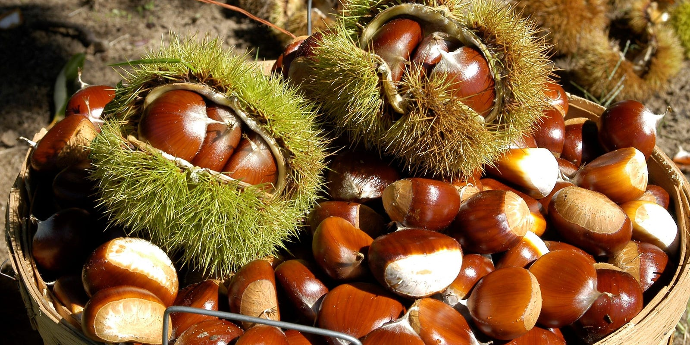

밤(Chestnut)
밤은 밤나무, 약밤나무 등 밤나무속 식물의 열매이다. 견과의 일종으로, 가시가 난 송이에 싸여 있고 갈색 겉껍질 안에 얇고 맛이 떫은 속껍질(보늬)이 있으며, 날것으로 먹거나 굽거나 삶아서 먹는다.

(밤 이미지)
(밤 이미지)
밤의 효능
1. 소화 잘 되는 영양간식 밤의 주요 영양성분으로는 탄수화물, 섬유질, 칼슘, 칼륨, 인, 비타민 A, 비타민 B1(티아민), B2(리보플라빈), 비타민 C, 니아신 등 탄수화물, 지방, 단백질, 비타민, 무기질 등 5대 영양을 고루 갖추고 있다. 피로해소 비타민이라 불리는 비타민 B1은 쌀의 4배나 되며, 면역력을 높이는 비타민 C와 성장에 관여하는 비타민 D가 풍부하고, 위장에 부담이 없이 소화도 잘 되는 음식이어서 특히 이유식이나 성장기 아이들의 간식, 노년층과 산후조리나 병후 회복 환자의 영양보충식으로도 좋다.2. 배탈, 설사 멈추는 천연 지사제 동의보감에서는 배탈과 설사가 심할 때 군밤을 천천히 씹어먹으면 효험이 있다고 소개하고 있으며, 소화가 잘 안되고 묽은 변을 자주 보는 경우에도 밤을 먹으면 도움이 될 수 있다.
3. 이뇨작용 돕는 신장의 과일 밤은 신장의 과일이라 불릴 정도로 신장을 보하고, 이뇨작용을 좋게 한다. 소변을 잘 보지 못해 하복부 팽만감이나 속이 더부룩한 경우 밤을 먹으면 도움이 될 수 있다.
4. 술 한 잔 후 숙취해소 밤을 술안주로 먹거나 술자리 후 비타민 C가 풍부한 밤을 먹는 것도 숙취해소에 도움이 된다. 거의 모든 숙취해소제에는 비타민 C가 함유돼 있어 있는데, 비타민 C가 숙취를 유발하는 알코올 분해물질인 아세트알데하이드의 생성을 억제하고, 피로를 해소하는데 도움을 주기 때문이다.
5. 뱃길여행 편안하게 해주는 멀미약 울릉도 등 섬을 드나드는 여객선이 머무는 항구 매점에는 ‘멀미에 좋은 밤’이라는 문구를 붙여놓고 생밤을 파는 것을 목격할 수 있다. 멀미는 인체의 평형감각이 자동차나 배의 익숙치 않고 불규칙적인 움직임에 적응하지 못하면서 유발되고, 또 피로와 스트레스가 평형기관에 민감한 영향을 끼치면서 더 심해진다. 이런 경우에는 생밤이나 껌 등 딱딱하고 오래 씹히는 음식을 먹으면 두경부 근육 운동으로 머리의 혈액순환이 활발해지면서 피로도나 스트레스 등 정신적인 요인을 한결 가볍게 해주는 효과가 있다. 특히 생밤을 네다섯 개 준비해 씹어 먹으면 멀미로 인한 메스꺼움과 구토증 등 거북한 속을 한결 편하게 할 수 있다.